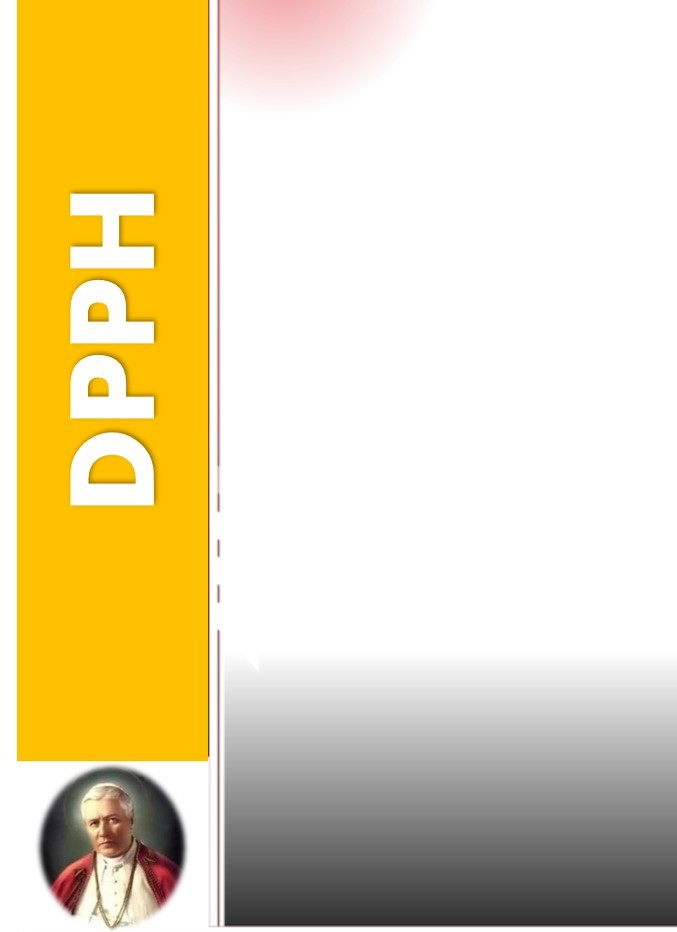

Paroki Santo Pius X
Karanganyar
Karanganyar

Jabatan: Ketua Dewan Pastoral Paroki
Periode: 2025 – 2028

Jabatan: Wakil Ketua Dewan Pastoral Paroki
Periode: 2025 – 2028

Jabatan: Sekretaris Dewan Pastoral Paroki
Periode: 2025 – 2028
Selamat datang di Sekretariat Paroki St. PIUS X Karanganar. Silahkan chat untuk informasi lebih lanjut. 🏠👋
Open Chat